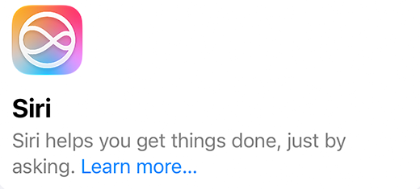
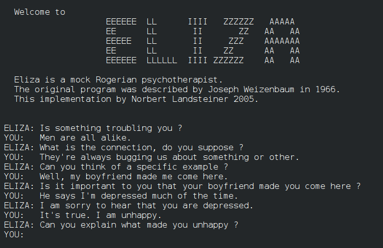

Interacting with human voice and language
You didn't even notice, but you interacted with an AI today... but when?
Language technologies are everywhere, even when you can't see them! Your phone's keyboard, your email system, your social media feed...
You talked to an AI today
Has your phone fixed a typo recently, without you even noticing? Did your email app hide a spam message? Maybe you asked an AI assistant for the weather or read a web page translated into your language. In each case, a machine handled human language. These tools are so common that we rarely stop to ask how they work, and this section covers exactly that.
As we have already introduced, language technologies are everywhere.
Maybe in the morning your alarm is switched off with a voice command, and your phone reads out the news. While you commute your navigation app speaks directions, and your messages are dictated rather than typed. When at work your email filters spam, your documents suggest corrections, and video calls generate automatic subtitles. And in the evening a streaming service searches for a film from a vague description, and a website translates a review from another language.

What are language technologies?
Language technologies are computer systems that can work with the way people write or speak.
Text-based technologies, or "natural language processing" read, analyse and produce written text. Voice-based technologies, or speech technologies listen to speech, turn it into text, and speak back with a synthetic voice.
The two families are closely linked. A voice assistant, for example, first converts your voice into text, then uses text technology to work out what you want, and finally turns its answer back into speech. Page 2 focuses on the text side, and Page 3 on the voice side.
A short history: dreaming of talking machines
The idea of talking to machines is much older than smartphones.
1950s: early experiments tried to translate Russian sentences into English automatically, and a laboratory machine learned to recognise spoken digits from a single speaker.
1960s: a program called ELIZA imitated a conversation by matching keywords in what the user typed. It had no real understanding, yet some users felt as if they were being listened to.
Following decades: researchers wrote more and more rules by hand, covering grammar, dictionaries and sound patterns. This worked in narrow situations but broke down quickly in real conversation. Today: systems learn from enormous collections of examples instead of relying on hand-written rules, which is why they have become so much more useful in recent years.

Why is human language so hard for machines?
Human language, unlike programming languages, is:
Ambiguous: “I saw her duck” can mean two very different things.
Dependent on context: “It’s cold in here” may be a comment or a request to close the window.
Constantly changing: slang, new words, abbreviations, emojis.
Varied in sound: accents, speed, background noise and different voices make speech very diverse.
Full of hidden meaning: irony, humour and politeness often say the opposite of what the words literally mean. “Great, another Monday!” is rarely a happy sentence.
Most systems therefore cannot be given a list of grammar rules, and they instead learn patterns from huge amounts of examples. This approach is called machine learning, and the steps are always similar:
- Input: text typed by a person or audio recorded by a microphone.
- Analysis: the model looks for patterns it learned during training.
- Output: a prediction, such as the next word, a translation, a transcription or a spoken answer
A simple example is a spam filter. It is shown thousands of messages already labelled “spam” or “not spam”, and it learns which words and patterns tend to appear in each group. When a new email arrives, it makes an informed guess